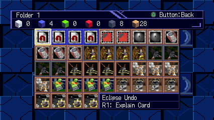
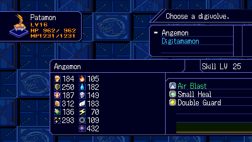
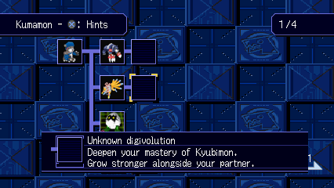
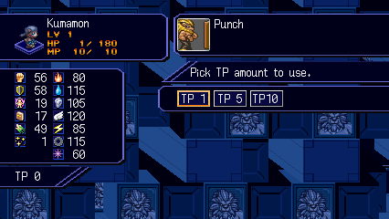

Save-body loading
25.02 → 6.11 seconds to the last observed data sector. The loaded save body matched byte for byte.
Digimon World 2003 / Windows fan project

Change forms from the menu. Adjust EXP and encounters. Revisit the Digital World in widescreen.
WINDOWS x64 · EXPERIMENTAL · OWN DISC DATA REQUIRED


01 / Digivolutions
Open DIGIVOLUTIONS to switch partners, equip battle forms and load techniques without returning to the lab.
Locked forms have training hints: a stat to develop or a form to master. The exact requirements stay hidden.
Lab and hint guide ↗

02 / Progression
Set normal EXP, DV EXP and random encounters independently. Keep the original rates or change them as you play.
03 / Soundtrack
Choose Original, DS, Sampled or Chip in SETTINGS. Notes and timing stay intact; instruments blend into the new palette without restarting the track.
Choose a palette to hear it.
Requires a local music pack (42 banks). Instrument routing and balance are still being tuned; this older clip demonstrates switching. Sound effects keep their original samples. Track-by-track listening notes ↗
04 / Performance
Matched local tests measured shorter card transfers and lower CPU time in battle.
25.02 → 6.11 seconds to the last observed data sector. The loaded save body matched byte for byte.
28.72 → 7.63 seconds to the last observed file-sector write. A controlled replay produced an identical full card.
14.13 → 9.69 ms in the tested idle battle with the optional native geometry unit. Both runs stayed near 50 updates per second.
The bar advances with transferred data and finishes after the game's completion check. Card checks, retries and disk flushes remain in place.
These are short local comparisons, not full-game benchmarks. Card timings exclude confirmation input and are not total menu-to-world waits. Save measurements ↗ · Battle measurements ↗
05 / Map travel

Select a visited stop and press Cross. Travel is limited to supported Asuka-server fields; pending story scenes or local encounters can block a route. The map shows the reason.
Current destinations and restrictions ↗L2 / LT toggles 4:3 and 16:9 in supported scenes.
R2 / RT toggles speedup. Tab still works as a hold.
06 / Screen view
Separate field and battle settings. Supported menus move panels and text into the wider view while keeping sprites and card artwork at their original proportions.




Recorded English layouts; other NPC screens and transitions still need coverage. Field edges can expose missing scenery. Card battles, movies and rewards retain their original view. Screen coverage ↗
07 / Build and play
An experimental Windows build for the European release. Tested areas are playable; full-campaign compatibility is still being checked.
Your own dump of the supported European release, Windows, and the tools listed in the build guide. There is no standalone game download here. Existing DuckStation memory cards can be copied into a separate save profile.
Later-game compatibility, more safe travel destinations, field edges and menu transitions, soundtrack balance, and extended movie playback. Higher-resolution combat models remain an offline research prototype. Controller testing does not cover every device.
Minimizing pauses offline gameplay; restoring resumes it. Switching focus to another window keeps the game running.
Tooling checks, native regression suites, and recorded gameplay each cover different parts of the project. A working checkpoint is not a promise of full-game compatibility. Read the testing guide ↗
{kind=link}
{kind=link}
{kind=link}
{kind=link}